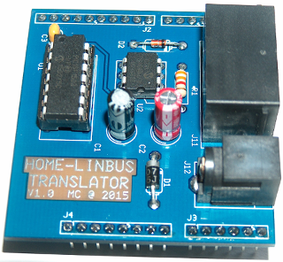

Anyone out here who has some experience with LINbus? LINbus is a simple automotive serial bus system related to the better known CAN-bus.
I have been working on the integration of an AXA remote 2.0 Window Opener(document only accesible for registered OpenRemote users). In Domoticaforum.eu I found a document which suggests it uses LIN. In my AXA integration document I have a link to a LINbus description.
In contrast to the secure IR interface, the LINbus interface can report the open/closed status of the window, which is interesting if you want to do rules. I am waiting for feedback from AXA on how they use this protocol. I am not really keen on adding an other wiring system in the house though. But as I am reconstructing a part of the house, I wouldn't mind to use it for the few roof windows there.
The reason that I choose to experiment with the AXA device is that it is relatively cheap, but robust. For the price of one Fakro Z-Wave Window Opener you almost get three AXA's
{kind=link}
{kind=link}
{kind=link}
|
There is now an Arduino Uno R3 Shield available to control the Remote 2.0 from Axa !. 
|
|
Interesting! I will have a look into it. I put my little project on hold, because I do have a somewhat older version of Velux windows. Axa says it does support Velux, but did not mention they only tested the newer windows that have different hinges with less friction. |
|
Z-Uno is there an english website available ?. Who is behind this ?. |
|
It is from the people of Z-Wave>me (http://www.z-wave.me). Afaik there is not yet a page in English. On there Github space you can find some (I think unfinished) software development |